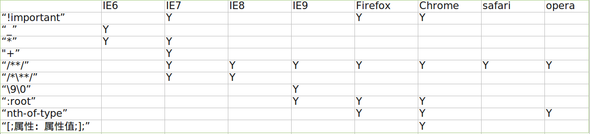

一.CSS hack简介：
由于不同的浏览器，比如IE6、IE7、IE8、FireFox、Chrome、Opera和Safari
等浏览器对CSS的解析认识不一样，因此会导致生成的页面效果不一样，得不到我们所需要的页面效果。 这个时候我们就需要针对不同的浏览器去写不
同的CSS，让它能够同时兼容不同的浏览器，能在不同的浏览器中也能得到我们想要的页面效果。这个针对不同的浏览器写不同的CSS code的过程，就
叫CSS hack!
二.CSS hack原理：
由于不同的浏览器对CSS的支持及解析结果不一样，还由于CSS中的优先级的关系。我们就可以根据这个来针对不同的浏览器来写不同的CSS。
CSS Hack大致有3种表现形式，CSS类内部Hack、选择器Hack以及HTML头部引用(if IE)Hack，CSS Hack主要针对IE浏览器。
类内部Hack：比如 IE6能识别下划线"_"和星号" * "，IE7能识别星号" * "，但不能识别下划线"_"，而firefox两个都不能认识，等等。
选择器Hack：比如 IE6能识别*html .class{}，IE7能识别*+html .class{}或者*:first-child+html .class{}，等等。
HTML[1]头部引用(if IE)Hack：
针对所有IE：
<!--[if IE]><!--您的代码--><![endif]-->
针对IE6及以下版本：
<!--[if lt IE 7]><!--您的代码--><![endif]-->
这类Hack不仅对CSS生效，对写在判断语句里面的所有代码都会生效。
书写顺序，一般是将识别能力强的浏览器的CSS写在前面。下面详细说一下。
三.各浏览器CSS hack兼容表（部分）

四.CSS内部hack
CSS内部hack包括："*"、"_"、"+"、"\0"、"\9"、"\9\0"、"!important"、"[;属性:属性值;];"、"/**/"、"/*\**/"等。
用法：
IE6:_属性名:属性值;如：_color:red;
IE6、7:*属性名:属性值;如：*color:red;
IE7:+属性名:属性值;如：+color:red;
IE7、8:属性名/*\**/:属性值\9;如：color/*\**/:red\9;
IE8、9:属性名:属性值\0;如：color:red\0;
IE9:属性名:属性值\9\0;如：color:red\9\0;
All IE:属性名:属性值\9;如：color:red\9;
IE7、FireFox、Chrome:属性名:属性值 !important;如：color:red !important;
Chrome、safari:[;属性名:属性值;];;如：[;color:red;];;
except IE6:属性名:/**/属性值;如：color:/**/red;
五.选择器hack
用法：
IE6:*html 选择符{属性名：属性值；}，如：*html p{font-size:30px;}
IE7:*+html 选择符{属性名：属性值；}，如：*+html p{font-size:30px;}
IE7:html* 选择符{属性名：属性值；}，如：html* p{font-size:30px;}
IE7:*:first-child+html 选择符{属性名：属性值；}，如：*:first-child+html p{font-size:30px;}
IE9::root 选择符{属性名：属性值\9；}，如：:root p{font-size:30px;}
FireFox:@moz-document url-prefix(){选择符{属性名：属性值；}}，如：@-moz-document url-prefix(){body{background-color:pink;}}
Chrome、Safari:选择符{(-bracket-:hack;color:red;);},如：p{(-bracket-:hack;color:red;);},其中的圆括号可以换成方括号
Chrome、Safari:@media screen and (-webkit-min-device-pixel-ratio:0){选择符{属性名：属性值；}}，如：
@media screen and (-webkit-min-device-pixel-ratio:0){body{background-color:yellow;}}
Opera:@media all and (min-width:0){选择符{属性名：属性值\0；}}，如：@media all and (min-width:0){body{background-color:gray;}}
Opera:@media all and (-webkit-min-device-pixel-ratio:10000),not all and (-webkit-min-device-pixel-ratio:0){选择符{属性名：属性值；}}，如：
@media all and (-webkit-min-device-pixel-ratio:10000),not all and (-webkit-min-device-pixel-ratio:0){body{background-color:red；}}
IE9、FireFox、Chrome、Safari、Opera：@media all and (min-width:0){选择符{属性名：属性值；}},如：@media all and (min-width:0){body{background-color:red;}}
IE8、IE9、FireFox、Chrome、Safari、Opera：html>/**/body 选择符{属性名：属性值；},如：html>/**/body p{background-color:red;}
IE7、IE8、IE9、FireFox、Chrome、Safari、Opera：html>body 选择符{属性名：属性值；},如：html>body p{background-color:red;}
iPhone：@media screen and (max-device-width:480px){选择符{属性名：属性值；}},如：@media screen and (max-device-width:480px){body{background-color：red；}}
六.HTML头部引用(if IE)Hack
详细内容
七.部分例子
在不同浏览器打开本页面，我长的样子是不一样的。如果我有下划线且有红框，那你用的是Chrome。如果你能看到我，那你用的不是IE8或9。